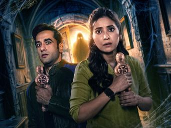

"Khul Sim Sim... into the realm of supernatural mysteries."
A modern supernatural twist on the classic Arabian Nights tale, Ali Baba aur 40 Bhoot follows the witty and resourceful Ali Baba as he stumbles upon a hidden cave containing not just treasures, but forty ancient spirits. Instead of forty thieves, he must now outsmart, outwit, and manage forty mischievous ghosts while protecting his town from dark supernatural forces.